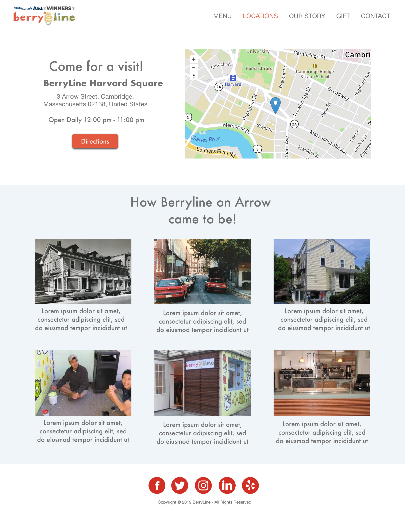

On the left in the home page, colors from the logo are used as accent colors throughout the
page to keep the
color palette consistent. They also provide contrast against the white background.
Lettering on the images shows the user exactly what flavor they are looking at. We have added a translucent box on top of each image to make the text is readable, varying opacity to account for the colour under it.
Using uniform pictures instead of simply displaying the flavor names provides continuity on the page. Further, the textures of the close up ice cream shots add a component beyond color.
In the location page above, we removed the bright red color blocking for a subtle blue color. This gives a nice transition while adding fullness to the page. In the navigation bar, location is highlighted red, letting the user know where they are. The directions button is in the logo’s red shade to draw the users eye to it.
Lettering on the images shows the user exactly what flavor they are looking at. We have added a translucent box on top of each image to make the text is readable, varying opacity to account for the colour under it.
Using uniform pictures instead of simply displaying the flavor names provides continuity on the page. Further, the textures of the close up ice cream shots add a component beyond color.
In the location page above, we removed the bright red color blocking for a subtle blue color. This gives a nice transition while adding fullness to the page. In the navigation bar, location is highlighted red, letting the user know where they are. The directions button is in the logo’s red shade to draw the users eye to it.